블록 탭
블록 카테고리
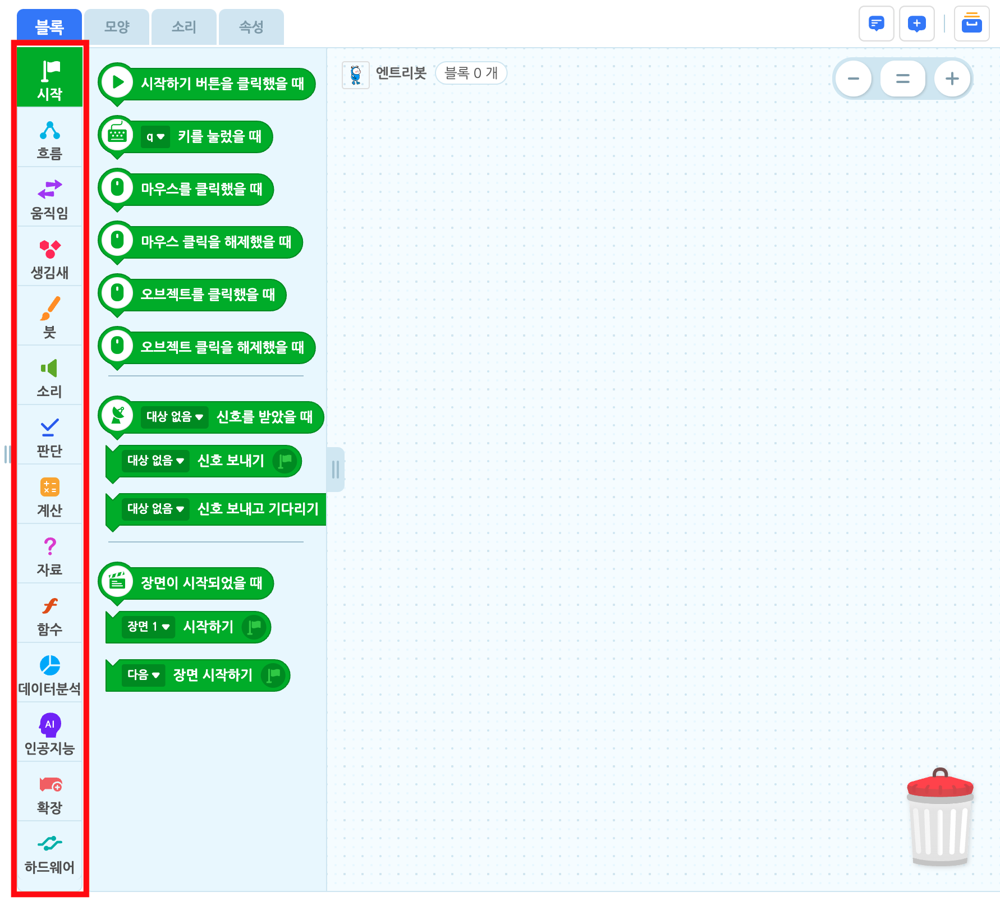엔트리의 블록을 카테고리로 분류한 영역입니다.
클릭하면 각 카테고리의 블록 꾸러미를 볼 수 있어요. 아래는 카테고리의 종류입니다.
- 시작
- 흐름

- 움직임
- 생김새
- 글상자
 (선택한 오브젝트가 글상자일 경우 표시)
(선택한 오브젝트가 글상자일 경우 표시) - 붓 (선택한 오브젝트가 글상자일 경우 표시하지 않음)
- 소리
- 판단
- 계산
- 자료
- 함수

- 데이터분석

- 인공지능

- 확장
- 하드웨어
블록 꾸러미
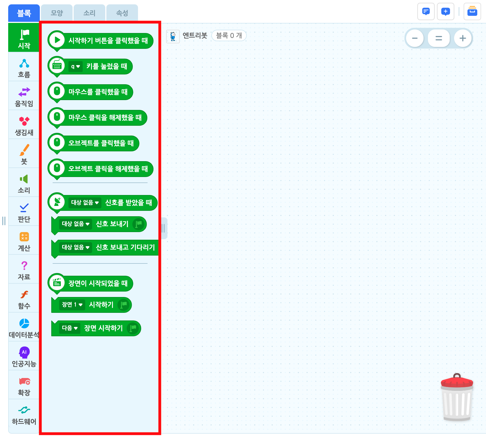각 카테고리의 모든 블록을 모아놓은 영역입니다.
블록 꾸러미의 블록은 드래그하면 블록 조립소로 옮길 수 있어요. 반대로, 블록을 드래그해서 블록 꾸러미에 놓으면 블록을 삭제할 수 있습니다.
블록 꾸러미의 우측에 위치한 영역 조절 손잡이를 드래그하면 블록 꾸러미의 가로 크기를 조절할 수 있습니다.
블록 조립소
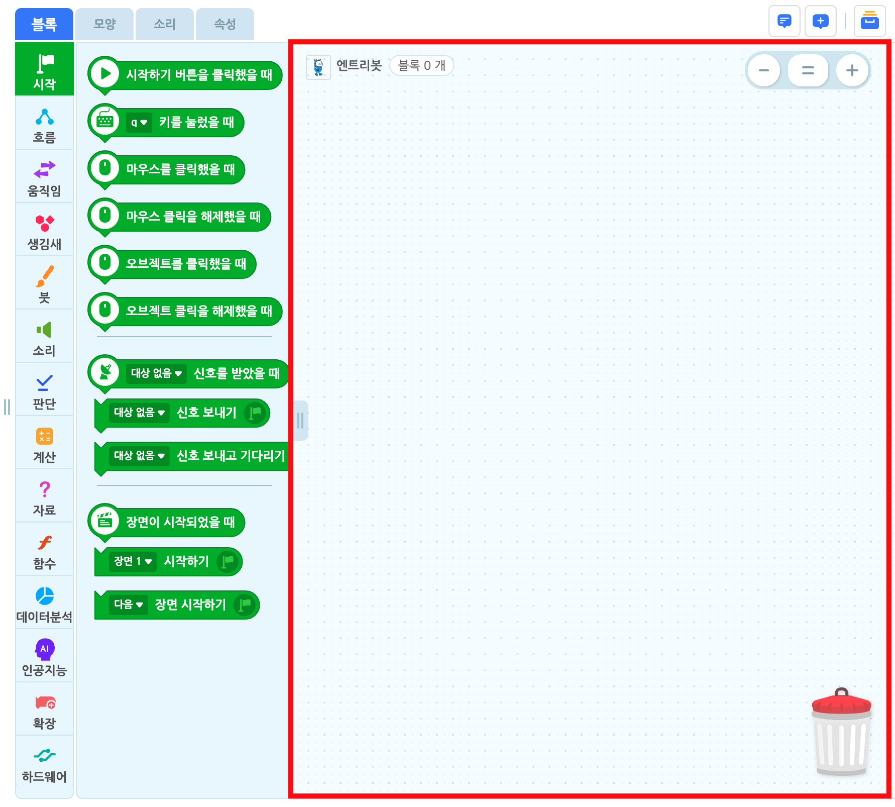블록 꾸러미에서 옮긴 블록을 자유롭게 배치하고 조립할 수 있는 영역입니다.
모든 오브젝트에는 하나의 블록 조립소가 있어요. 블록 조립소에 있는 블록은 해당 오브젝트에 명령할 수 있습니다.
블록 조립소의 빈 공간을 드래그하면 공간을 이동할 수 있어요.
블록 조립소의 빈 공간을 마우스 우클릭한 뒤 ‘코드 정리하기’를 클릭하여 이 공간의 모든 블록을 정리할 수 있습니다.
함수 블록 조립소
함수 블록 카테고리의 블록 꾸러미에 있는 ‘함수 만들기’ 버튼을 클릭하거나, 이미 만들어진 함수 블록을 편집할 때 나타나는 블록 조립소입니다.
일반 블록 조립소와 별개의 공간이며, 모든 함수에는 하나의 블록 조립소가 있어요.
일반 블록 조립소와 마찬가지로 빈 공간을 드래그하면 공간을 이동할 수 있고, 마우스 우클릭하면 같은 메뉴를 사용할 수 있습니다.
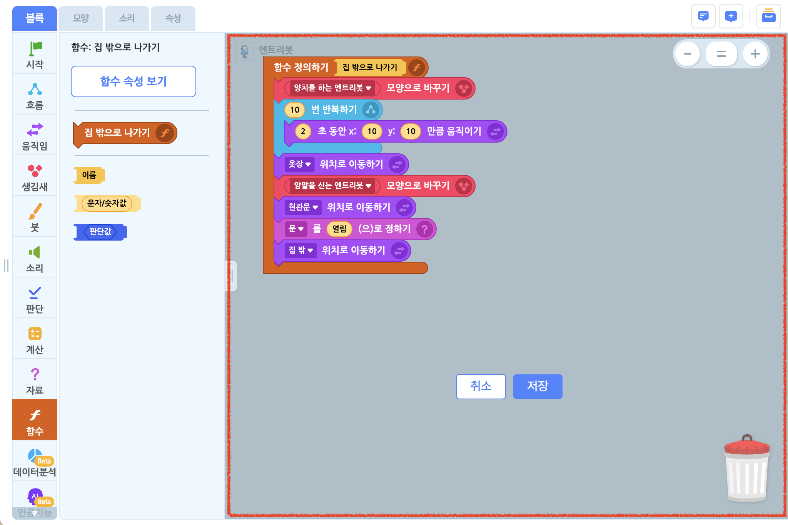
조립 기능
블록 조립소에 있는 블록은 직소 퍼즐처럼 조립할 수 있습니다.
드래그하는 블록을 조립한 형상을 미리 볼 수 있어요. 이 때 블록을 놓으면 ‘착!’ 소리와 함께 조립해요. 조립할 블록 개수에 제한은 없습니다.
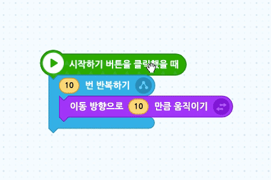
조립한 블록의 상위 블록을 드래그하면 조립한 블록 전체를 옮길 수 있고, 하위 블록을 드래그하면 분리할 수 있어요.
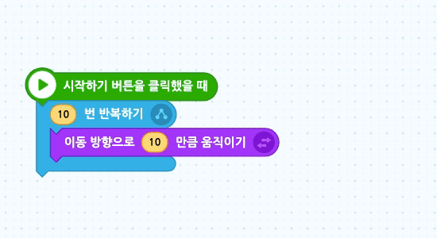
값을 입력할 수 있는 값 블록( )에 같은 모양의 둥근 블록을 드래그하면 흰색 테두리가 나타납니다. 이 때 블록을 놓으면 결합할 수 있어요.
)에 같은 모양의 둥근 블록을 드래그하면 흰색 테두리가 나타납니다. 이 때 블록을 놓으면 결합할 수 있어요.
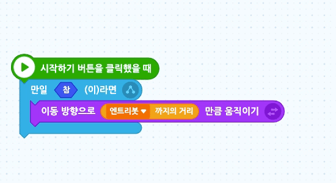
조건을 결합할 수 있는 판단 블록( )에 다른 판단 블록()이 가까워지면 흰색 테두리를 볼 수 있습니다. 이 때 블록을 놓으면 결합할 수 있어요.
)에 다른 판단 블록()이 가까워지면 흰색 테두리를 볼 수 있습니다. 이 때 블록을 놓으면 결합할 수 있어요.
블록 안에 있는 육각형 모양에는 판단 블록( )만, 원 모양에는 값 블록(
)만, 원 모양에는 값 블록( )만 넣을 수 있어요.
)만 넣을 수 있어요.
복사/붙여넣기, 삭제 기능
블록 조립소에 있는 블록은 복사/붙여넣기, 삭제가 가능합니다.
단축키를 활용해 더 간단하게 기능을 사용할 수 있어요. 하지만 단축키를 이용하려면 먼저 해당 기능을 이용하려는 블록을 클릭해야 합니다.
| 기능 | 단축키 (Windows/macOS 공통) |
|---|---|
| 복사 | Ctrl + c |
| 붙여넣기 | Ctrl + v |
| 잘라내기 | Ctrl + x |
| 삭제 | Del |
※ macOS에서도 Command 키가 아니라 Ctrl 키를 사용하는 것에 유의해 주세요.
블록 조립소의 블록이나 빈공간을 마우스 오른쪽 클릭하거나 길게 터치하여, 코드 복사 & 붙여넣기(복제), 코드 복사, 코드 삭제가 가능합니다.
메모 기능
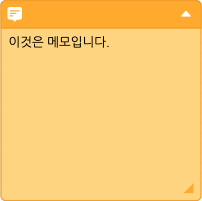
메모 기능을 이용하면 작품이나 장면, 블록의 용도 등을 설명할 수 있습니다.
메모는 블록 조립소에서만 확인할 수 있으며, 작품에 아무런 영향을 주지 않습니다. 그러니 안심하고 마음껏 메모해보세요.
메모를 해 놓으면, 다른 사람에게 블록을 설명하거나 나중에 블록을 다시 확인할 때 편리해요!
① 메모 접기/열기
메모의 우측 상단의 화살표를 누르면 메모를 접거나 열수 있습니다.
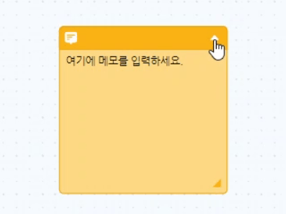
② 메모 크기 조절하기
메모의 우측 하단에 위치한 영역 조절 손잡이를 드래그하면 메모의 크기를 조절할 수 있습니다.
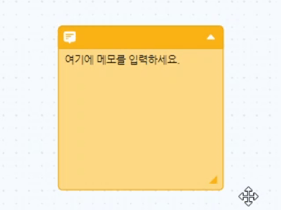
③ 블록과 메모 연결하기 / 분리하기
메모를 드래그하면 블록과 연결할 수 있어요. 연결한 상태에서는 해당 블록과 메모가 분리되지 않습니다.

블록 조립소의 빈 공간을 마우스 우클릭하면 메모 추가하기, 모든 메모 숨기기/모든 메모 보이기가 가능합니다.
블록 조립소의 블록을 마우스 우클릭하면 해당 블록과 결합한 메모를 추가할 수 있습니다.
메모를 마우스 우클릭하면 메모 복사 & 붙여넣기(복제), 메모 복사하기, 메모 삭제하기, 메모 접기, (메모가 블록과 결합했다면) 메모 분리하기가 가능합니다.
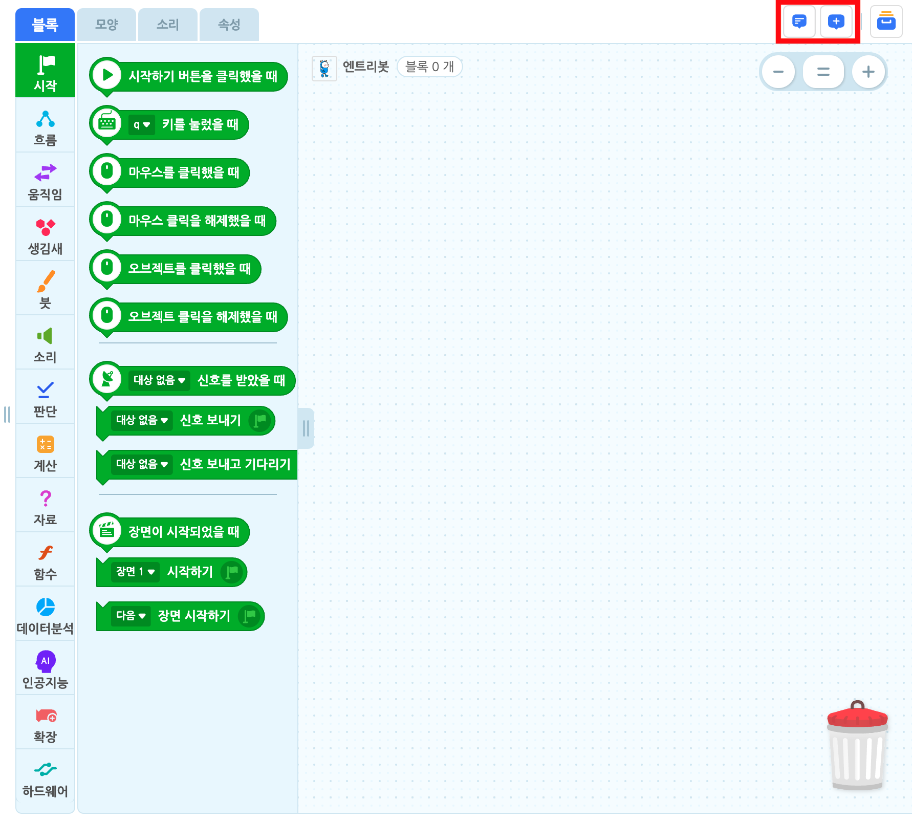탭 우측의 메모 아이콘을 클릭하는 방법으로도 모든 메모를 숨기거나 보일 수 있습니다.
이미지로 저장
모든 블록은 배경 없는 깔끔한 PNG 이미지로 저장할 수 있습니다.
블록을 마우스 우클릭한 뒤 ‘이미지로 저장하기’를 클릭하면 해당 블록을 다운로드 할 수 있습니다.
블록 조립소의 빈 공간을 마우스 우클릭한 뒤 ‘모든 코드 이미지로 저장하기’를 클릭하여 조립소에 있는 모든 블록들의 이미지를 다운로드 할 수 있습니다.
블록 꾸러미의 블록을 마우스 우클릭한 뒤 ‘이미지로 저장하기’를 클릭하여 해당 블록을 이미지로 저장할 수 있습니다.
블록 조립소의 빈 공간을 마우스 우클릭한 뒤 ‘모든 코드 이미지로 저장하기’를 클릭하면 해당 블록 조립소에 있는 모든 블록을 이미지로 저장할 수 있습니다.
- 블록 조립소의 블록을 마우스 우클릭한 뒤 ‘이미지로 저장하기’를 클릭하면 해당 블록을 이미지로 저장할 수 있습니다.
확대/축소 기능
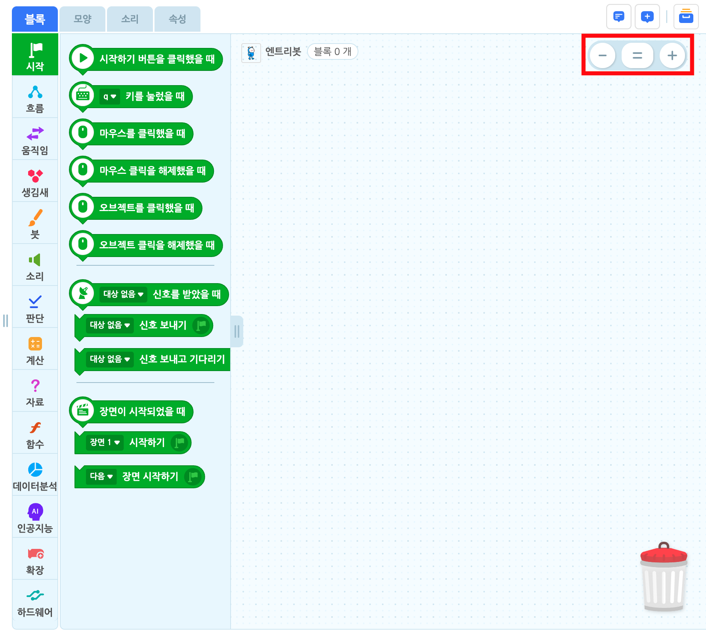블록 조립소의 블록과 메모가 한층 더 잘 보이기 위한 기능입니다. 블록의 양에 따라 조절하면 유용합니다.
블록 조립소의 우측 상단에 위치한 버튼을 클릭하면 블록 조립소를 확대 혹은 축소하거나 표준 크기로 조절할 수 있습니다.
표준 크기는 100%이고, 크기는 60%~200% 사이로 조절할 수 있습니다.